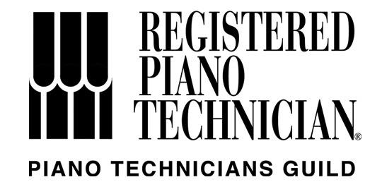

Schedule Tuning
New Customer Returning CustomerBrad Smith
Pianist, keyboardist and teacher
Registered Piano Technician (RPT)


BA degree from Berklee College of Music 1985
9 yrs service as concert technician at Berklee 1984-1993
35+ yrs servicing Boston area homes, schools, studios and venues
Complete piano rebuilding and restoration services since 2006


Technical Resume
Concert tuning for the top concert halls and recording studios in the Boston area since 1985.
Concert tuning for classical artists including The Boston Pops, Cleveland Symphony and Luciano Pavarotti.
Classical concert preparation for Steinway artists Menahem Pressler, Christopher Taylor and Andre' Watts.
Extensive concert tuning experience during the 80's and 90's for popular artists such as Billy Joel, Doc Severensen, Natalie Cole, Diana Ross, Elton John, Frank Sinatra, Keith Emerson, Ray Charles, Michael Buble, Bruce Hornsby and Sarah McLachlan. Numerous jazz artists including Wynton Marsalis Group, Chick Corea, Lyle Mays/Pat Metheny Group and Kenny Werner.
IN HOME SERVICE
Since 1992, I have built and maintain a large private tuning clientele in Southern New Hampshire and Northern Mass. Currently serving over 1500 in-home clients throughout New England
REBUILDING, REGULATION, TUNING AND VOICING SKILLS
Tuning as many as 1200 pianos per year, my specialty is concert regulation, tuning and tone voicing. Aural tuning is my preference. In 2006 I completed renovations on a 3000 sq ft. piano rebuilding & refinishing shop in Bedford, NH providing complete rebuilding and refinishing services, specializing in Steinway restoration As an active rebuilder with PTG, I keep abreast of the latest tools and methods for the myriad tasks involved in rebuilding a piano. I maintain an extensive array of tools, jigs, machines and fixtures devoted to the highest possible quality rebuilding
TECHNICAL TRAINING
Apprentice to Tom Sheehan, Berklee College of Music, Boston, 1980-82 B.A. Degree Piano Performance, Berklee College of Music, Boston, MA , 1985 Graduate of Yamaha's Little Red Schoolhouse, grand piano regulation, 1992 Factory authorized service training, Yamaha Disklavier pianos, 1993 Factory authorized service training, Piano Disc installation & service, 1993 Yamaha Disklavier authorized service training, 2003 Yamaha Performance Piano regulation training 2003 Geneva International, Petrof WorkSmart grand piano regulation and voicing training 2004 Ongoing Steinway training at all PTG sponsored events, covering official Steinway methods & procedures for tuning, regulation & voicing of concert instruments.
AFFILIATIONS, PIANO TECHNICIANS GUILD
Piano Technicians Guild continuing education since 1979 Active member of PTG, passed all RPT exams in 1990, 2004 and 2014, passing at examiner level, aural tuning only Active member of the Boston Chapter PTG
MUSICAL BACKGROUND
Working pianist since 1975
Instructor, Jazz Piano, Northwestern Michigan College 1982-84
Music therapy, blind & autistic children, Mass Assoc. for the Blind 1984-86
Private instructor, jazz & classical piano since 1975
Private study with Charlie Banacos, jazz piano and improvisation
Private study with Cathy Rand, Boston Conservatory, classical technique
Extensive experience as solo pianist in wide variety of settings
We accept cash, check, Venmo or Zelle
Minimum appointment fee: $200
Most appointments are in the range of $200 to $350
Pianos that are serviced regularly (like every 6-9 months) tend towards the lower range.
Common service steps are:
- Tuning to A440 standard pitch
- Check action screws (there are about 200 screws that need periodic adjustment)
- Check and adjust pedals, tighten piano bench hardware
- Action mechansim adjustment as time permits (the more often I see a piano, the more I can do small improvements to the touch and tone)
- Minor tone voicing (over time, hammers get compressed creating harsh tone that can be smoothed out with regular service)
When the piano's overal pitch is flat by 10% or more, costs tend towards the higher price range.
Common service steps are:
- All the steps above
- Additional rough tunings to put the piano at the pitch standard (this makes it possible to do the actual fine tuning)
This is due to seasonal humidity changes that tend to make the piano go flat over time, requiring additional tuning(s) to correct pitch.
I recommend sensible service work ...
In all cases my approach is to consider the condition, history and context of you and your piano before recommending any work.